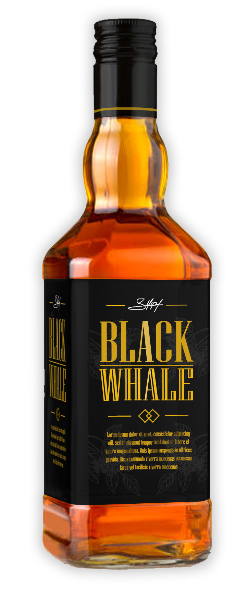
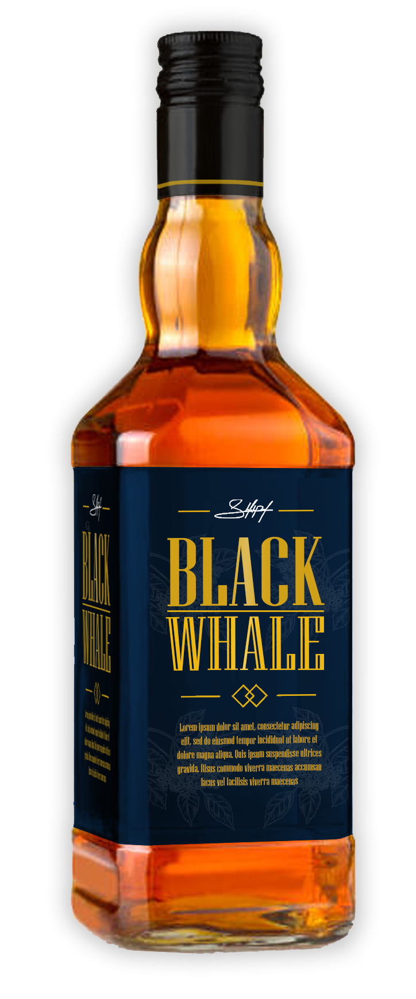
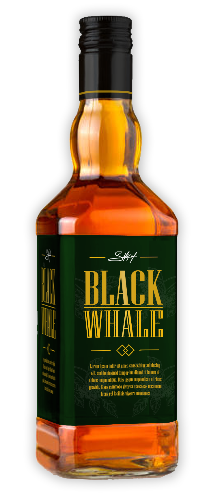

SABORES
Como todas las familias, la nuestra está compuesta de personalidades individuales. Si bien cada uno tiene su personalidad única, todos son parte de una familia Black Whale centrada en el sabor. Ahora que ya despertamos tu apetito, dejanos saciar tu sed. Primero, tomamos lo mejor de los whiskeys de alambique y de grano fino. Luego los destilamos tres veces, no porque tengamos que hacerlo sino porque queremos, ya que esto les da su suavidad característica. Por último, los envejecemos en barricas de roble durante al menos cuatro años. Ya sea que busque un Whiskey suave y lleno de sabor para beber solo o algo para usar en su cóctel favorito, cualquiera de estas variedades es una excelente opción para comenzar.

SABOR ORIGINAL
Un clásico por naturaleza
El sabor Original de Black Whale es nuestra Mezcla Pionera, la que ha presentado nuestro whisky en todo el mundo. Versátil y con un atractivo universal, tiene un sabor acentuado y repleto de carácter que se mantiene incluso al ser mezclado. Black Whale Original es ahora el tercer whisky escocés más vendido en todo el mundo. Perfecto para fiestas y encuentros, en casa o al salir de ella. Disfrútalo con amigos.
Se destaca por su carácter e intensidad, por sus notas especiadas que estallan con sabores vibrantes y ahumados.
Es una mezcla que combina whiskies ligeros de la costa este escocesa y whiskies ahumados y oscuros de la costa oeste, creando una extraordinaria profundidad de sabor. Explota en el paladar con la frescura de la espuma de una ola, seguida por un estallido de especias aromáticas -canela y pimienta- cuya efervescencia se asienta en el centro de la lengua. Al paladar, se siente una dulzura frutal, como manzanas frescas o pera y notas de vainilla para después, con la firma única de Black Whale, dar lugar a un final persistente y ahumado.
ETIQUETA ROJA
Lo fuerte primero
Un whisky excepcional para compartir en cualquier ocasión, sea pasando un rato agradable en casa con amigos o en una salida inolvidable, es rico, complejo y bien balanceado, un blend con notas a frutos del bosque, vainilla y tierra ahumada. reúne sabores de los 4 rincones de Escocia para crear una experiencia compleja, profunda y enriquecedora. Se desarrolla suavemente sobre la lengua, liberando notas intensas de vainilla dulce que dan paso a notas de cáscara de naranja y aromas a especias y pasas. El final es increíblemente suave y equilibrado, rico en humo, turba y malta.

ETIQUETA AZUL
Amantes de lo suave
El Etiqueta Azul es la mezcla perfecta para una celebración indulgente. Lujoso, cremoso y con notas de miel, es un gran tributo a la unión armoniosa entre los whiskies Speyside y Highland, con vestigios de madera ahumada de la costa oeste. El Etiqueta Azul de Black Whale está hecho para compartir esas noches inolvidables con amigos increíbles. Es conocido por su suavidad cremosa. Empieza con una explosión lujosa de delicado néctar y gentiles sabores ahumados que se convierten en frutas dulces y suaves tonos de miel profundos, para luego dar paso a un final duradero con notas ahumadas y roble.

ETIQUETA VERDE
Sencillo y con clase
La Etiqueta Verde de Black Whale es una obra maestra inigualable. Es una mezcla exquisita hecha con algunos de los whiskies más singulares y excepcionales de Escocia. Solo uno de cada diez mil barriles tiene la calidad exclusiva y el carácter para entregar el sabor insignia e inolvidable de Black Whale. Un whisky extraordinario para ocasiones extraordinarias.
Inicia con un sabor a avellanas, miel, jerez y naranjas, para después liberar secretos como el jengibre, quinoto, sándalo y chocolate negro. Luego, la dulzura de la miel emerge, acompañada por toques de pimienta y frutos secos que dan paso a un final largo, duradero y suave de humo sutil perfectamente balanceado.